2023 National 5 Mathematics - Paper 1 marking instructions
Source: Scottish Qualifications Authority (SQA) / Qualifications Scotland. This is a StemInteract HTML companion, not an official HTML edition. Selectable text is supplied alongside original page images. Use the images or original PDF for equations, powers, fractions, vector notation, tables and diagrams; text extraction cannot fully preserve mathematical layout.
Jump to a question
PDF page 1
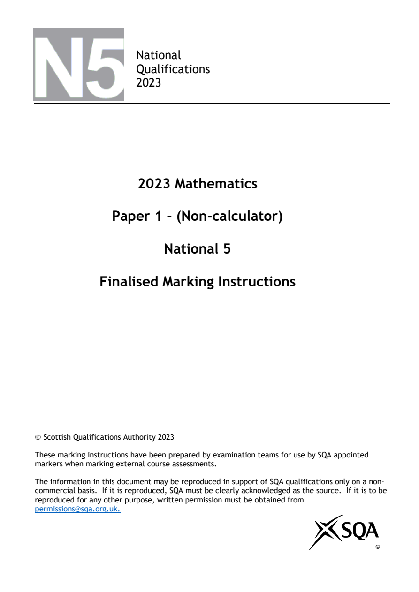
Selectable page text
National
Qualifications
2023
2023 Mathematics
Paper 1 – (Non-calculator)
National 5
Finalised Marking Instructions
Scottish Qualifications Authority 2023
These marking instructions have been prepared by examination teams for use by SQA appointed
markers when marking external course assessments.
The information in this document may be reproduced in support of SQA qualifications only on a non-
commercial basis. If it is reproduced, SQA must be clearly acknowledged as the source. If it is to be
reproduced for any other purpose, written permission must be obtained from
permissions@sqa.org.uk.
©PDF page 2
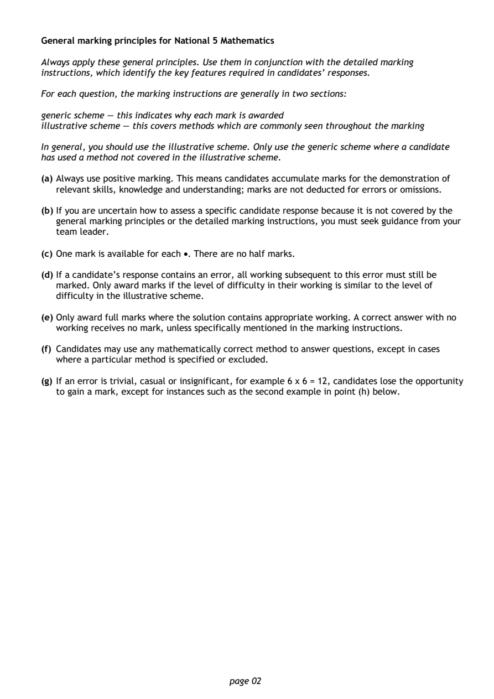
Selectable page text
General marking principles for National 5 Mathematics
Always apply these general principles. Use them in conjunction with the detailed marking
instructions, which identify the key features required in candidates’ responses.
For each question, the marking instructions are generally in two sections:
generic scheme — this indicates why each mark is awarded
illustrative scheme — this covers methods which are commonly seen throughout the marking
In general, you should use the illustrative scheme. Only use the generic scheme where a candidate
has used a method not covered in the illustrative scheme.
(a) Always use positive marking. This means candidates accumulate marks for the demonstration of
relevant skills, knowledge and understanding; marks are not deducted for errors or omissions.
(b) If you are uncertain how to assess a specific candidate response because it is not covered by the
general marking principles or the detailed marking instructions, you must seek guidance from your
team leader.
(c) One mark is available for each •. There are no half marks.
(d) If a candidate’s response contains an error, all working subsequent to this error must still be
marked. Only award marks if the level of difficulty in their working is similar to the level of
difficulty in the illustrative scheme.
(e) Only award full marks where the solution contains appropriate working. A correct answer with no
working receives no mark, unless specifically mentioned in the marking instructions.
(f) Candidates may use any mathematically correct method to answer questions, except in cases
where a particular method is specified or excluded.
(g) If an error is trivial, casual or insignificant, for example 6 x 6 = 12, candidates lose the opportunity
to gain a mark, except for instances such as the second example in point (h) below.
page 02PDF page 3
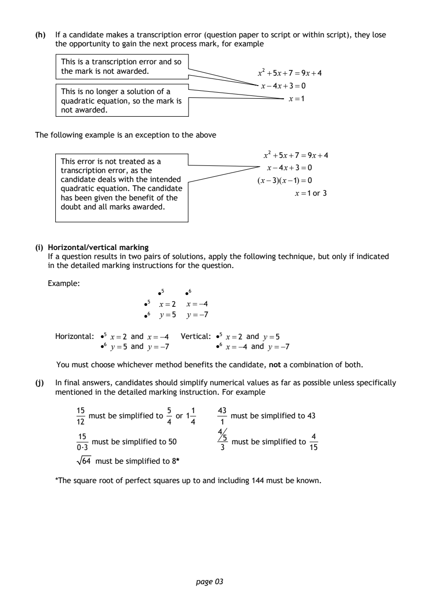
Selectable page text
(h) If a candidate makes a transcription error (question paper to script or within script), they lose
the opportunity to gain the next process mark, for example
This is a transcription error and so
the mark is not awarded. x² +5x+7 =9x+4
x−4x+3=0
This is no longer a solution of a
x=1
quadratic equation, so the mark is
not awarded.
The following example is an exception to the above
x² +5x+7 =9x+4
This error is not treated as a
x−4x+3=0
transcript ion err or, as the
candidate deals with the intended (x−3)(x−1)=0
quadratic equation. The candidate
x=1 or 3
has been given the benefit of the
doubt and all marks awarded.
(i) Horizontal/vertical marking
If a question results in two pairs of solutions, apply the following technique, but only if indicated
in the detailed marking instructions for the question.
Example:
•5 •6
•5 x=2 x=−4
•6 y =5 y =−7
Horizontal: •5 x=2 and x=−4 Vertical: •⁵ x=2 and y =5
•6 y =5 and y =−7 •6 x=−4 and y =−7
You must choose whichever method benefits the candidate, not a combination of both.
(j) In final answers, candidates should simplify numerical values as far as possible unless specifically
mentioned in the detailed marking instruction. For example
15 5 1 43
must be simplified to or 1 must be simplified to 43
12 4 4 1
4
15 5 4
must be simplified to 50 must be simplified to
0·3 3 15
64 must be simplified to 8*
*The square root of perfect squares up to and including 144 must be known.
page 03PDF page 4
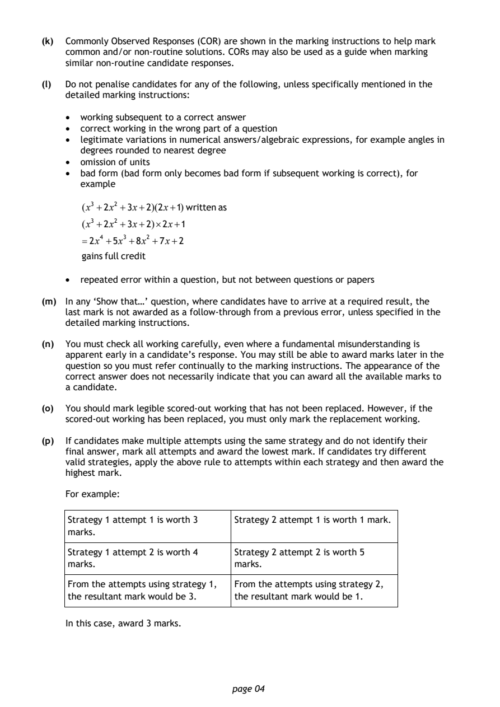
Selectable page text
(k) Commonly Observed Responses (COR) are shown in the marking instructions to help mark
common and/or non-routine solutions. CORs may also be used as a guide when marking
similar non-routine candidate responses.
(l) Do not penalise candidates for any of the following, unless specifically mentioned in the
detailed marking instructions:
• working subsequent to a correct answer
• correct working in the wrong part of a question
• legitimate variations in numerical answers/algebraic expressions, for example angles in
degrees rounded to nearest degree
• omission of units
• bad form (bad form only becomes bad form if subsequent working is correct), for
example
(x³ +2x² +3x+2)(2x+1) written as
(x³ +2x² +3x+2)×2x+1
=2x⁴ +5x³ +8x² +7x+2
gains full credit
• repeated error within a question, but not between questions or papers
(m) In any ‘Show that…’ question, where candidates have to arrive at a required result, the
last mark is not awarded as a follow-through from a previous error, unless specified in the
detailed marking instructions.
(n) You must check all working carefully, even where a fundamental misunderstanding is
apparent early in a candidate’s response. You may still be able to award marks later in the
question so you must refer continually to the marking instructions. The appearance of the
correct answer does not necessarily indicate that you can award all the available marks to
a candidate.
(o) You should mark legible scored-out working that has not been replaced. However, if the
scored-out working has been replaced, you must only mark the replacement working.
(p) If candidates make multiple attempts using the same strategy and do not identify their
final answer, mark all attempts and award the lowest mark. If candidates try different
valid strategies, apply the above rule to attempts within each strategy and then award the
highest mark.
For example:
Strategy 1 attempt 1 is worth 3 Strategy 2 attempt 1 is worth 1 mark.
marks.
Strategy 1 attempt 2 is worth 4 Strategy 2 attempt 2 is worth 5
marks. marks.
From the attempts using strategy 1, From the attempts using strategy 2,
the resultant mark would be 3. the resultant mark would be 1.
In this case, award 3 marks.
page 04PDF page 5
Paper 1, Question 1Paper 1, Question 2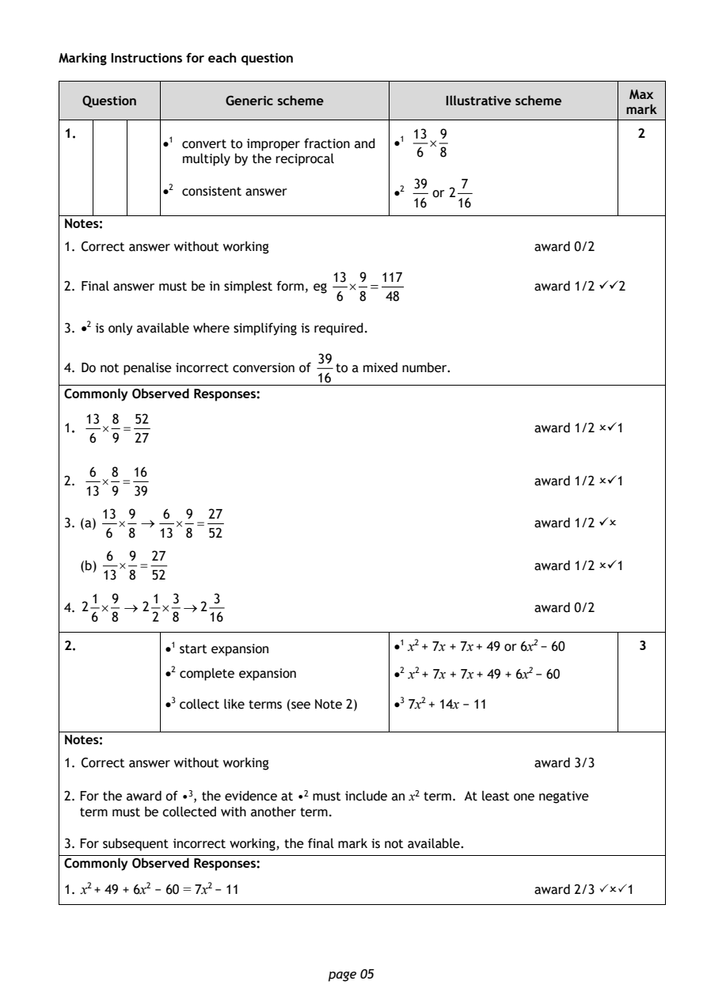
Selectable page text
Marking Instructions for each question
Max
Question Generic scheme Illustrative scheme
mark
1. 13 9 2
•1 convert to improper fraction and •1 ×
6 8
multiply by the reciprocal
39 7
•2 consistent answer •2 or 2
16 16
Notes:
1. Correct answer without working award 0/2
13 9 117
2. Final answer must be in simplest form, eg × = award 1/2 2
6 8 48
3. •² is only available where simplifying is required.
39
4. Do not penalise incorrect conversion of to a mixed number.
16
Commonly Observed Responses:
13 8 52
1. × = award 1/2 1
6 9 27
6 8 16
2. × = award 1/2 1
13 9 39
13 9 6 9 27
3. (a) × → × = award 1/2
6 8 13 8 52
6 9 27
(b) × = award 1/2 1
13 8 52
1 9 1 3 3
4. 2 × → 2 × →2 award 0/2
6 8 2 8 16
2. •1 start expansion •1 x² + 7x + 7x + 49 or 6x² − 60 3
•2 complete expansion •2 x² + 7x + 7x + 49 + 6x² − 60
•3 collect like terms (see Note 2) •3 7x² + 14x − 11
Notes:
1. Correct answer without working award 3/3
2. For the award of •³, the evidence at •² must include an x² term. At least one negative
term must be collected with another term.
3. For subsequent incorrect working, the final mark is not available.
Commonly Observed Responses:
1. x² + 49 + 6x² − 60 = 7x² − 11 award 2/3 1
page 05PDF page 6
Paper 1, Question 3Paper 1, Question 4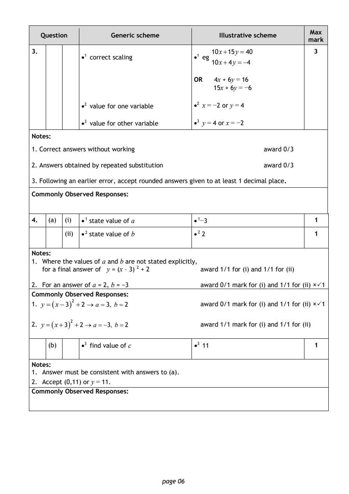
Selectable page text
Max
Question Generic scheme Illustrative scheme
mark
3. 10x+15y =40 3
•1 correct scaling •1 eg
10x+4y =−4
OR 4x + 6y = 16
15x + 6y = −6
•2 value for one variable •2 x = −2 or y = 4
•3 value for other variable •3 y = 4 or x = −2
Notes:
1. Correct answers without working award 0/3
2. Answers obtained by repeated substitution award 0/3
3. Following an earlier error, accept rounded answers given to at least 1 decimal place.
Commonly Observed Responses:
4. (a) (i) • 1 state value of a • 1−3 1
(ii) • 2 state value of b • 2 2 1
Notes:
1. Where the values of a and b are not stated explicitly,
for a final answer of y = (x – 3) ² + 2 award 1/1 for (i) and 1/1 for (ii)
2. For an answer of a = 2, b = −3 award 0/1 mark for (i) and 1/1 for (ii) 1
Commonly Observed Responses:
1. y =( x−3 ) ² +2 → a =3, b =2 award 0/1 mark for (i) and 1/1 for (ii) 1
2. y =( x+3 ) ² +2→ a =−3, b=2 award 1/1 mark for (i) and 1/1 for (ii)
(b) •3 find value of c •3 11 1
Notes:
1. Answer must be consistent with answers to (a).
2. Accept (0,11) or y = 11.
Commonly Observed Responses:
page 06PDF page 7
Paper 1, Question 5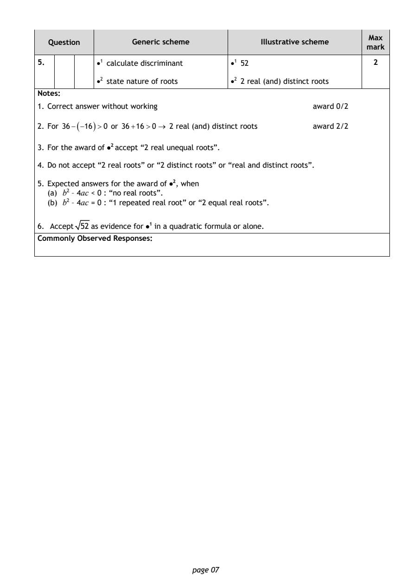
Selectable page text
Max
Question Generic scheme Illustrative scheme
mark
5. •1 calculate discriminant •1 52 2
•2 state nature of roots •2 2 real (and) distinct roots
Notes:
1. Correct answer without working award 0/2
2. For 36−(−16 )>0 or 36+16>0 → 2 real (and) distinct roots award 2/2
3. For the award of •² accept “2 real unequal roots”.
4. Do not accept “2 real roots” or “2 distinct roots” or “real and distinct roots”.
5. Expected answers for the award of •², when
(a) b² – 4ac < 0 : “no real roots”.
(b) b² – 4ac = 0 : “1 repeated real root” or “2 equal real roots”.
6. Accept 52 as evidence for •¹ in a quadratic formula or alone.
Commonly Observed Responses:
page 07PDF page 8
Paper 1, Question 6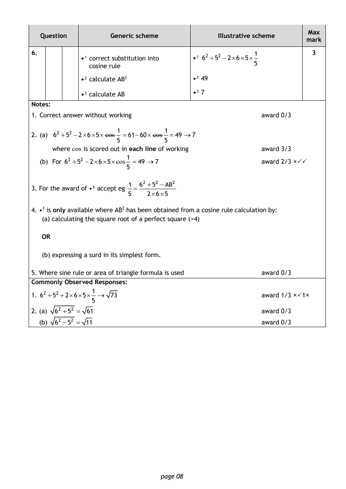
Selectable page text
Max
Question Generic scheme Illustrative scheme
mark
6. 1 3
•¹ correct substitution into •¹ 6² +5² −2×6×5×
5
cosine rule
•² calculate AB² •² 49
•³ calculate AB •³ 7
Notes:
1. Correct answer without working award 0/3
1 1
2. (a) 6² +5² −2×6×5×cos =61−60×cos =49 →7
5 5
where cos is scored out in each line of working award 3/3
1
(b) For 6² +5² −2×6×5×cos =49 →7 award 2/3
5
1 6² +5² −AB²
3. For the award of •¹ accept eg =
5 2×6×5
4. •³ is only available where AB² has been obtained from a cosine rule calculation by:
(a) calculating the square root of a perfect square (>4)
OR
(b) expressing a surd in its simplest form.
5. Where sine rule or area of triangle formula is used award 0/3
Commonly Observed Responses:
1
1. 6² +5² +2×6×5× → 73 award 1/3 1
5
2. (a) 6² +5² = 61 award 0/3
(b) 6² −5² = 11 award 0/3
page 08PDF page 9
Paper 1, Question 7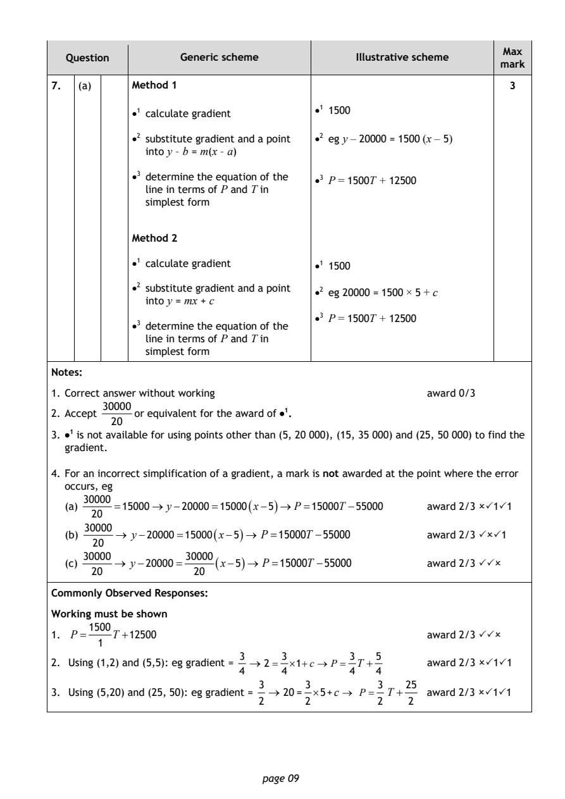
Selectable page text
Max
Question Generic scheme Illustrative scheme
mark
7. (a) Method 1 3
•1 calculate gradient •1 1500
•2 substitute gradient and a point •2 eg y – 20000 = 1500 (x – 5)
into y – b = m(x – a)
•3 determine the equation of the •3 P = 1500T + 12500
line in terms of P and T in
simplest form
Method 2
•1 calculate gradient •1 1500
•2 substitute gradient and a point •2 eg 20000 = 1500 × 5 + c
into y = mx + c
•3 P = 1500T + 12500
•3 determine the equation of the
line in terms of P and T in
simplest form
Notes:
1. Correct answer without working award 0/3
30000
2. Accept or equivalent for the award of •¹.
20
3. •¹ is not available for using points other than (5, 20 000), (15, 35 000) and (25, 50 000) to find the
gradient.
4. For an incorrect simplification of a gradient, a mark is not awarded at the point where the error
occurs, eg
30000
(a) =15000→ y−20000=15000 ( x−5 )→P=15000T −55000 award 2/3 11
20
30000
(b) → y−20000=15000 ( x−5 )→ P=15000T −55000 award 2/3 1
20
30000 30000
(c) → y−20000= ( x−5 )→ P=15000T −55000 award 2/3
20 20
Commonly Observed Responses:
Working must be shown
1500
1. P= T +12500 award 2/3
1
3 3 3 5
2. Using (1,2) and (5,5): eg gradient = → 2= ×1+c → P = T + award 2/3 11
4 4 4 4
3 3 3 25
3. Using (5,20) and (25, 50): eg gradient = → 20= ×5+c → P = T + award 2/3 11
2 2 2 2
page 09PDF page 10
Paper 1, Question 8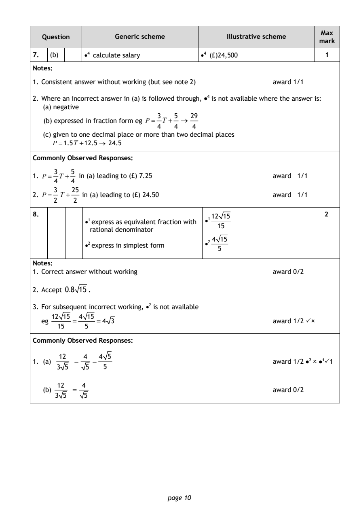
Selectable page text
Max
Question Generic scheme Illustrative scheme
mark
7. (b) •4 calculate salary •4 (£)24,500 1
Notes:
1. Consistent answer without working (but see note 2) award 1/1
2. Where an incorrect answer in (a) is followed through, •⁴ is not available where the answer is:
(a) negative
3 5 29
(b) expressed in fraction form eg P = T + →
4 4 4
(c) given to one decimal place or more than two decimal places
P =1.5T +12.5→ 24.5
Commonly Observed Responses:
3 5
1. P = T + in (a) leading to (£) 7.25 award 1/1
4 4
3 25
2. P = T + in (a) leading to (£) 24.50 award 1/1
2 2
8. 2
12 15
•1 express as equivalent fraction with •1
15
rational denominator
4 15
•2 express in simplest form •2
5
Notes:
1. Correct answer without working award 0/2
2. Accept 0.8 15.
3. For subsequent incorrect working, •² is not available
12 15 4 15
eg = =4 3 award 1/2
15 5
Commonly Observed Responses:
12 4 4 5
1. (a) = = award 1/2 •² •11
3 5 5 5
12 4
(b) = award 0/2
3 5 5
page 10PDF page 11
Paper 1, Question 9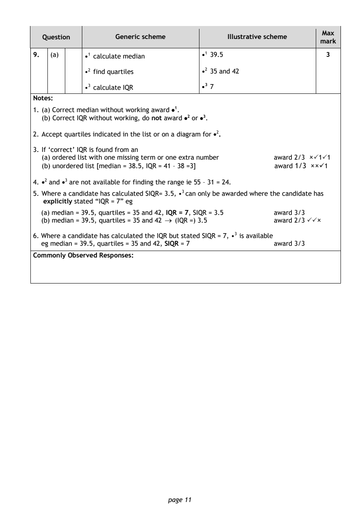
Selectable page text
Max
Question Generic scheme Illustrative scheme
mark
9. (a) •1 calculate median •1 39.5 3
•2 find quartiles •2 35 and 42
•3 calculate IQR •3 7
Notes:
1. (a) Correct median without working award •¹.
(b) Correct IQR without working, do not award •² or •³.
2. Accept quartiles indicated in the list or on a diagram for •².
3. If ‘correct’ IQR is found from an
(a) ordered list with one missing term or one extra number award 2/3 11
(b) unordered list [median = 38.5, IQR = 41 – 38 =3] award 1/3 1
4. •² and •³ are not available for finding the range ie 55 – 31 = 24.
5. Where a candidate has calculated SIQR= 3.5, •³ can only be awarded where the candidate has
explicitly stated “IQR = 7” eg
(a) median = 39.5, quartiles = 35 and 42, IQR = 7, SIQR = 3.5 award 3/3
(b) median = 39.5, quartiles = 35 and 42 → (IQR =) 3.5 award 2/3
6. Where a candidate has calculated the IQR but stated SIQR = 7, •³ is available
eg median = 39.5, quartiles = 35 and 42, SIQR = 7 award 3/3
Commonly Observed Responses:
page 11PDF page 12
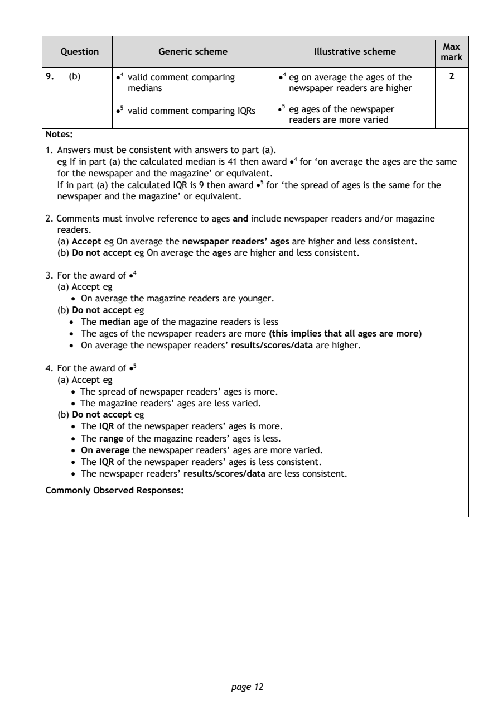
Selectable page text
Max
Question Generic scheme Illustrative scheme
mark
9. (b) •4 valid comment comparing •4 eg on average the ages of the 2
medians newspaper readers are higher
•5 valid comment comparing IQRs •5 eg ages of the newspaper
readers are more varied
Notes:
1. Answers must be consistent with answers to part (a).
eg If in part (a) the calculated median is 41 then award •⁴ for ‘on average the ages are the same
for the newspaper and the magazine’ or equivalent.
If in part (a) the calculated IQR is 9 then award •⁵ for ‘the spread of ages is the same for the
newspaper and the magazine’ or equivalent.
2. Comments must involve reference to ages and include newspaper readers and/or magazine
readers.
(a) Accept eg On average the newspaper readers’ ages are higher and less consistent.
(b) Do not accept eg On average the ages are higher and less consistent.
3. For the award of •⁴
(a) Accept eg
• On average the magazine readers are younger.
(b) Do not accept eg
• The median age of the magazine readers is less
• The ages of the newspaper readers are more (this implies that all ages are more)
• On average the newspaper readers’ results/scores/data are higher.
4. For the award of •⁵
(a) Accept eg
• The spread of newspaper readers’ ages is more.
• The magazine readers’ ages are less varied.
(b) Do not accept eg
• The IQR of the newspaper readers’ ages is more.
• The range of the magazine readers’ ages is less.
• On average the newspaper readers’ ages are more varied.
• The IQR of the newspaper readers’ ages is less consistent.
• The newspaper readers’ results/scores/data are less consistent.
Commonly Observed Responses:
page 12PDF page 13
Paper 1, Question 10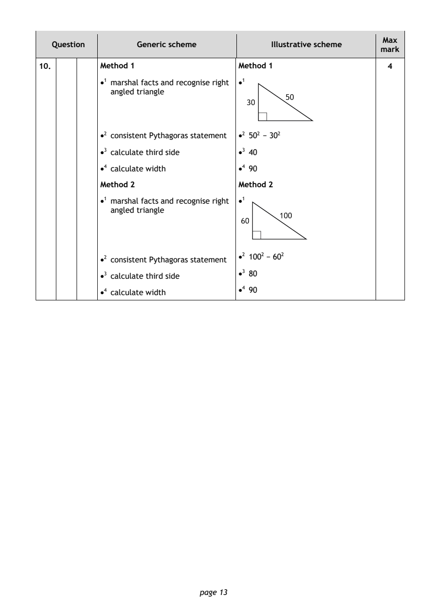
Selectable page text
Max
Question Generic scheme Illustrative scheme
mark
10. Method 1 Method 1 4
•1 marshal facts and recognise right •1
angled triangle
•2 consistent Pythagoras statement •2 50² − 30²
•3 calculate third side •3 40
•4 calculate width •4 90
Method 2 Method 2
•1 marshal facts and recognise right •1
angled triangle
•2 consistent Pythagoras statement •2 100² − 60²
•3 calculate third side •3 80
•4 calculate width •4 90
page 13PDF page 14
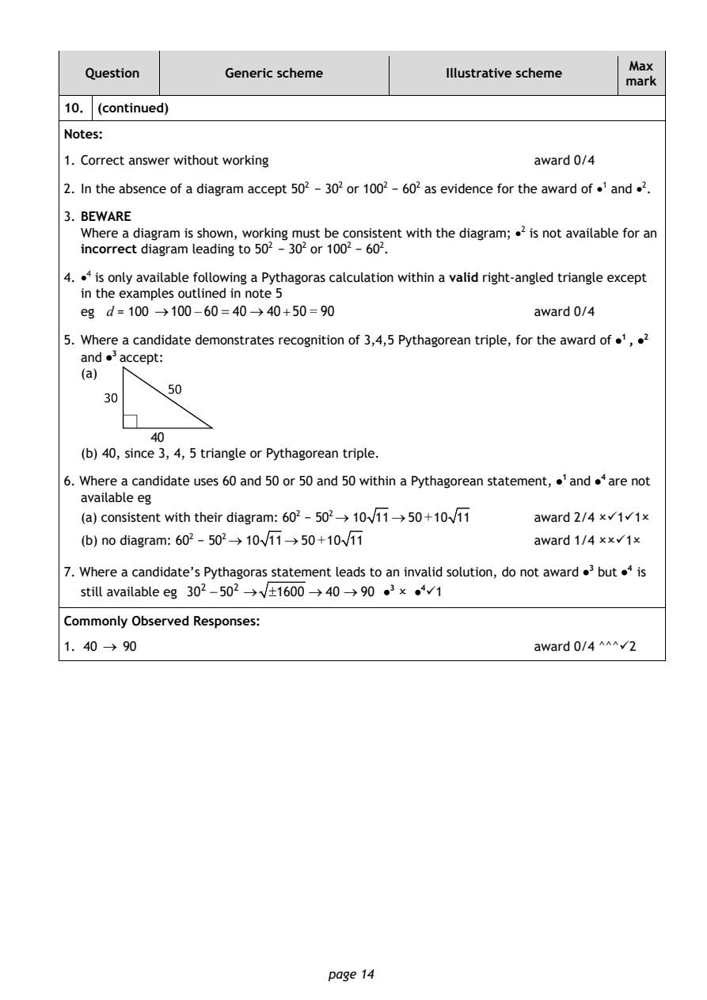
Selectable page text
Max
Question Generic scheme Illustrative scheme
mark
10. (continued)
Notes:
1. Correct answer without working award 0/4
2. In the absence of a diagram accept 50² − 30² or 100² − 60² as evidence for the award of •¹ and •².
3. BEWARE
Where a diagram is shown, working must be consistent with the diagram; •² is not available for an
incorrect diagram leading to 50² − 30² or 100² − 60².
4. •⁴ is only available following a Pythagoras calculation within a valid right-angled triangle except
in the examples outlined in note 5
eg d = 100 →100–60=40→40+50=90 award 0/4
5. Where a candidate demonstrates recognition of 3,4,5 Pythagorean triple, for the award of •¹ , •2
and •³ accept:
(a)
40
(b) 40, since 3, 4, 5 triangle or Pythagorean triple.
6. Where a candidate uses 60 and 50 or 50 and 50 within a Pythagorean statement, •¹ and •⁴ are not
available eg
(a) consistent with their diagram: 60² − 50²→10 11→50+10 11 award 2/4 11
(b) no diagram: 60² − 50²→10 11→50+10 11 award 1/4 1
7. Where a candidate’s Pythagoras statement leads to an invalid solution, do not award •³ but •⁴ is
still available eg 30² −50² → ±1600 →40 →90 •³ •41
Commonly Observed Responses:
1. 40 → 90 award 0/4 ^^^2
page 14PDF page 15
Paper 1, Question 11Paper 1, Question 12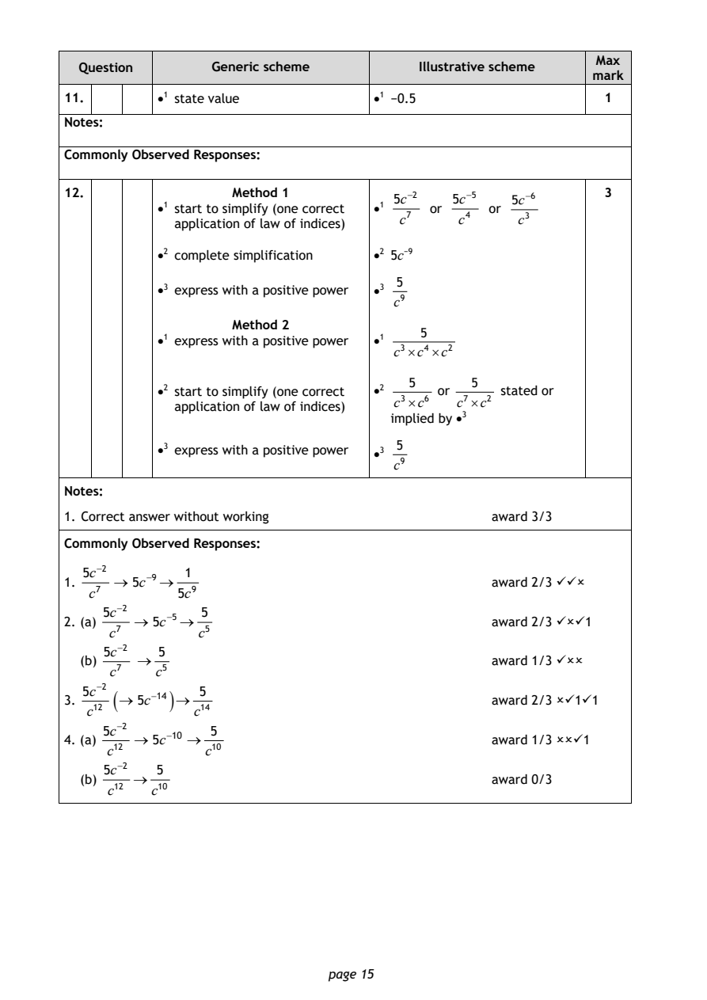
Selectable page text
Max
Question Generic scheme Illustrative scheme
mark
11. •1 state value •1 −0.5 1
Notes:
Commonly Observed Responses:
12. Method 1 3
5c⁻² 5c⁻⁵ 5c⁻⁶
•1 start to simplify (one correct •1 or or
c⁷ c⁴ c³
application of law of indices)
•2 complete simplification •2 5c⁻⁹
5
•3 express with a positive power •3
c⁹
Method 2
5
•1 express with a positive power •1
c³×c⁴×c²
5 5
•2 start to simplify (one correct •2 or stated or
c³×c⁶ c⁷×c²
application of law of indices)
implied by •³
•3 express with a positive power •3 5
c⁹
Notes:
1. Correct answer without working award 3/3
Commonly Observed Responses:
5c⁻² 1
1. → 5c⁻⁹→ award 2/3
c⁷ 5c⁹
5c⁻² 5
2. (a) → 5c⁻⁵→ award 2/3 1
c⁷ c⁵
5c⁻² 5
(b) → award 1/3
c⁷ c⁵
5c⁻² ( ) 5
3. → 5c⁻¹⁴ → award 2/3 11
c¹² c¹⁴
5c⁻² 5
4. (a) → 5c⁻¹⁰ → award 1/3 1
c¹² c¹⁰
5c⁻² 5
(b) → award 0/3
c¹² c¹⁰
page 15PDF page 16
Paper 1, Question 13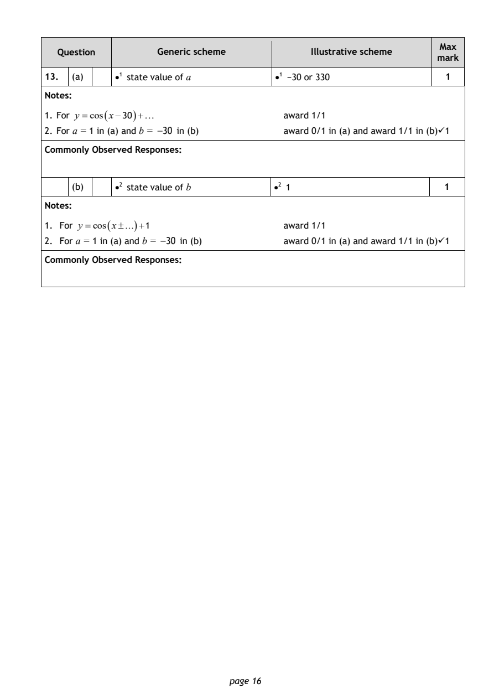
Selectable page text
Max
Question Generic scheme Illustrative scheme
mark
13. (a) •1 state value of a •1 −30 or 330 1
Notes:
1. For y =cos(x−30 )+ award 1/1
2. For a = 1 in (a) and b = −30 in (b) award 0/1 in (a) and award 1/1 in (b)1
Commonly Observed Responses:
(b) •2 state value of b •2 1 1
Notes:
1. For y =cos(x±)+1 award 1/1
2. For a = 1 in (a) and b = −30 in (b) award 0/1 in (a) and award 1/1 in (b)1
Commonly Observed Responses:
page 16PDF page 17
Paper 1, Question 14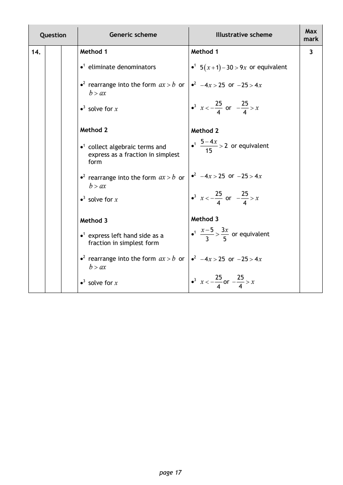
Selectable page text
Max
Question Generic scheme Illustrative scheme
mark
14. Method 1 Method 1 3
•1 eliminate denominators •1 5 (x+1 )−30>9x or equivalent
•2 rearrange into the form ax>b or •² −4x>25 or −25>4x
b>ax
25 25
•3 solve for x •3 x<− or − > x
4 4
Method 2 Method 2
5−4x
•1 collect algebraic terms and •1 >2 or equivalent
15
express as a fraction in simplest
form
•2 rearrange into the form ax>b or • ² −4x>25 or −25>4x
b>ax
25 25
•3 solve for x •3 x<− or − > x
4 4
Method 3 Method 3
x−5 3x
•1 express left hand side as a •1 > or equivalent
3 5
fraction in simplest form
•2 rearrange into the form ax>b or •² −4x>25 or −25>4x
b>ax
25 25
•3 solve for x •3 x<− or − > x
4 4
page 17PDF page 18
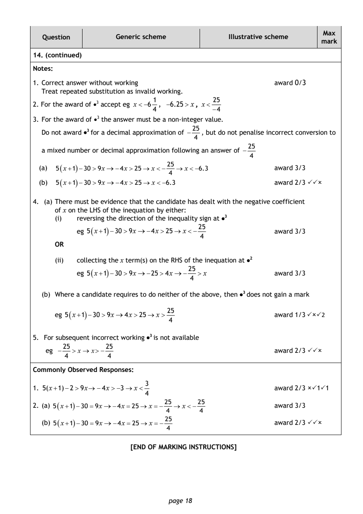
Selectable page text
Max
Question Generic scheme Illustrative scheme
mark
14. (continued)
Notes:
1. Correct answer without working award 0/3
Treat repeated substitution as invalid working.
1 25
2. For the award of •³ accept eg x<−6 , −6.25> x, x<
4 −4
3. For the award of •³ the answer must be a non-integer value.
25
Do not award •³ for a decimal approximation of − , but do not penalise incorrect conversion to
4
25
a mixed number or decimal approximation following an answer of −
4
25
(a) 5 (x+1 )−30>9x→−4x>25→ x<− → x<−6.3 award 3/3
4
(b) 5 (x+1 )−30>9x→−4x>25→ x<−6.3 award 2/3
4. (a) There must be evidence that the candidate has dealt with the negative coefficient
of x on the LHS of the inequation by either:
(i) reversing the direction of the inequality sign at •³
25
eg 5 ( x+1 )−30>9x→−4x>25→ x<− award 3/3
4
OR
(ii) collecting the x term(s) on the RHS of the inequation at •²
25
eg 5 ( x+1 )−30>9x→−25>4x→− > x award 3/3
4
(b) Where a candidate requires to do neither of the above, then •³ does not gain a mark
25
eg 5 ( x+1 )−30>9x→4x>25→ x> award 1/3 2
4
5. For subsequent incorrect working •³ is not available
25 25
eg − > x → x>− award 2/3
4 4
Commonly Observed Responses:
3
1. 5(x+1)−2>9x→ −4x>−3→ x< award 2/3 11
4
25 25
2. (a) 5 (x+1 )−30=9x→−4x=25→ x=− → x<− award 3/3
4 4
25
(b) 5 (x+1 )−30=9x→−4x=25→ x=− award 2/3
4
[END OF MARKING INSTRUCTIONS]
page 18